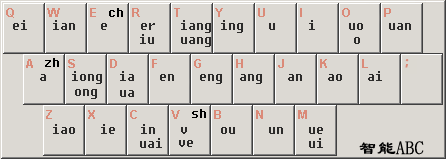

技能新法：改用双拼输入法的记录
一些缘由、效果和参考资料
改练双拼的缘起
Mac OS X 升级 为 EI Capitan 后，默认的默认简体拼音输入法比较好用，而且支持双拼——智能ABC双拼方案。
改练双拼输入法后
速度上去了，一个字只要打两个键就完成了，且不用花过多的时间在选词上。
还不够快的原因是：
- 我全拼打字也不快；
- 我基本只打词组，而不是句子。
另外IOS上我也在手机上用起了双拼，用的是触宝输入法（支持智能ABC方案）
练习改变输入习惯
自己因为打字慢，也想打快一些，所以进行了一些练习和尝试；
从维基上找出智能ABC 双拼方案的键位图 如下
也尝试找了会助记词，自己觉得用处不大，还是得自己打字熟练键位比较容易记忆适应，新的打字习惯。
我是从头练起，在练习键位的过程中记忆ABC的键位。练习键位的网站
助记参考
刚才写这篇记录的时候，在网上北大中文论坛：剑凝’ 网友提到他的助记方法。比较简短，也好记忆，我也顺便联结放在这里让大家参考；
我花了几个小时，编了个故事性的记忆口诀，能让你只用一小时就能记熟双拼键盘，而且不易忘记。
首先：zh 在 A 键，ch 在 E 键，sh 在 V 键, en 在 F 键, eng 在 G 键, ang 在 H 键, an 在 J 键, uo 在 O 键, 这几个是很有规律性, 容易记忆的, 就不在口诀记忆之内了.
其它难记的, 尽纳入下面的口诀中.
记忆口诀：
无烟日又二，
妻泪特汪洋，
嘤嘤破碗怨，
送的蛙和鸭，
烤来自咬些，
此因歪，必殴！
“你晕摸月偎”。
口诀释意：
无烟 W-ian 日又二 R-iu-er， （无米下炊已经两天了。）
妻泪 Q-ei 特汪洋 T-uang-iang， （妻子的泪水特别多。）
嘤嘤 Y-ing 破碗怨 P-uan-ǔan， （嘤嘤哭着还摔破碗报怨。）
送 S-ong 的蛙和鸭 D-ua-ia， （ 朋友送来青蛙和鸭子救援）
烤 K-ao 来 L-ai 自咬 Z-iao 些 X-ie， （丈夫烤来自已吃，却不管妻子）
此因歪 C-in-uai，必殴 B-ou！ （这样自私举动是不好的，妻子必然会打丈夫的。）
“你晕 N-un 摸月偎 M-ue-ui”。 （打得丈夫头晕晕，还说：“你如果头晕就摸着月亮靠住吧。哈哈~）
欢迎联系 Arvin Yu , 邮箱：yuyandong@outlook.com
本作品采用 知识共享署名-非商业性使用-禁止演绎 3.0 Unported许可协议 进行许可。
Copyright © 2019 Modified by ArvinYu, Theme used GitHub CSS.